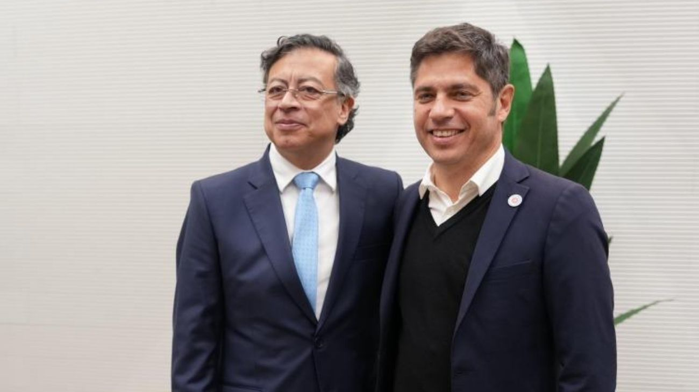

Kicillof se reunió con Petro en España y criticó la gestión de Milei ante el mundo
En el marco de su gira por España, el gobernador bonaerense se reunió con el presidente colombiano Gustavo Petro y advirtió que en el exterior se percibe un "desplome" de la economía argentina bajo la actual administración.

El gobernador de la provincia de Buenos Aires, Axel Kicillof, continúa su gira por España y protagonizó un encuentro con el presidente de Colombia, Gustavo Petro, que generó repercusiones tanto por su contenido político como por las declaraciones que lo acompañaron. Durante la reunión, ambos mandatarios analizaron, según las propias palabras de Kicillof, los desafíos que enfrentan los países latinoamericanos en un contexto de inestabilidad mundial y la necesidad de construir alianzas regionales, en particular frente a lo que describieron como las amenazas de la ultraderecha internacional.
El gobernador bonaerense aprovechó el encuentro para trazar un diagnóstico crítico de la situación argentina ante interlocutores extranjeros. Kicillof afirmó que desde el exterior se percibe una situación de extrema fragilidad en el país, caracterizada por lo que describió como una caída de la demanda y una ausencia total del Estado. Las declaraciones apuntan directamente a la gestión de Javier Milei y se producen en un momento en que el gobierno nacional acumula respaldos de organismos internacionales como el FMI y el Banco Mundial, y exhibe datos de recuperación de la actividad económica.
El encuentro adquirió una dimensión adicional por los dichos del propio Petro, quien a través de sus redes sociales describió a Kicillof como alguien que posiblemente sea presidente de Argentina para sacarla de su colapso, posicionándolo públicamente como referente de la oposición progresista regional. Este tipo de declaraciones de un jefe de Estado extranjero sobre la política interna argentina suelen generar rispideces diplomáticas, especialmente en un gobierno que ha tenido cruces previos con el mandatario colombiano. La frase de Petro también instala implícitamente a Kicillof en el escenario electoral de 2027, cuando vence el mandato de Milei.
La gira europea del gobernador bonaerense tiene un perfil claramente político y de construcción de alianzas internacionales con espacios de centroizquierda y progresismo. El encuentro con Petro refuerza ese posicionamiento y marca una línea de diferenciación explícita con la política exterior del gobierno nacional, que ha orientado sus vínculos hacia Washington, la órbita libertaria europea y mandatarios como Donald Trump. En ese sentido, el viaje de Kicillof no es solo una gira diplomática provincial sino un movimiento de construcción de capital político internacional de cara a la disputa electoral que se avecina.